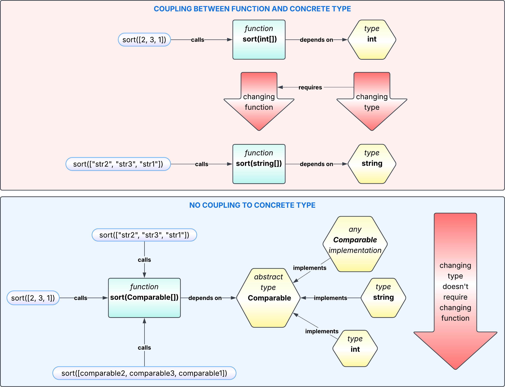
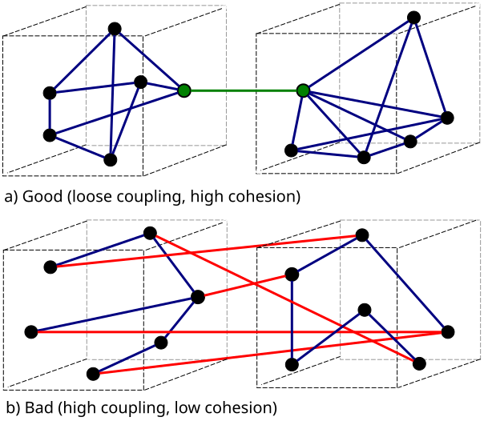

Back to Coupling and Cohesion
Coupling and Cohesion in practice: meaningful quantitative metrics and the common ground behind software design principles.

Original human-authored content, transparent process. Verify:


A SOLID GRASP and KISS can get you fired. Yet in software engineering, that’s exactly how you get hired. Beginner developers and clean code fanatics often misuse these terms and overapply the associated practices, turning a codebase into an impressive but difficult-to-maintain illustration of these principles. Whether you are just starting your career, believe every developer should live by SOLID, or have ever been unfairly accused of not understanding software design principles, this article is for you.
In practice, such principles ultimately come down to managing coupling and cohesion in all their forms and at every level of a system. And once we have a good grasp of coupling and cohesion, there is little point in memorizing the alphabet soup of design principles, let alone fetishizing them.
What are Coupling and Cohesion?
Coupling is a measure of how strongly components are interconnected, such that a change to one component can require changes to others.
Cohesion is a measure of how closely all the parts of a component align with a single purpose.
For example, suppose my function sorts an array of integers. If I have to modify the function to make it sort an array of strings, the function is coupled to the integer type. If, instead, the function works with an abstract Comparable type, I can use it with any type that satisfies that contract without modifying the function itself. In other words, it is not coupled to any specific element type, although it is still coupled to the Comparable contract. At the same time, if the function is responsible only for sorting the array it receives - with no unrelated transformations, business-rule validation, and so on - it has high cohesion.

You may already see that neither coupling nor cohesion is an absolute measure. Both depend on the particular changes we consider, the kinds of components involved, and the relationships between them. Coupling can be unidirectional or bidirectional. There are many classifications of coupling and cohesion, but they are rarely needed in practice.
How to Measure Coupling and Cohesion?
Usually, if a project has problems because of suboptimal coupling and cohesion, you don't need quantitative metrics to notice them. After working on the project for some time, you can just tell. But if you need concrete numbers to support a report, justify a decision, or justify work to be done, the approach described below can be useful.
Since we are more interested in the practical rather than theoretical application of these concepts, I usually recommend an approach based on collecting statistics from actual work. We need to track:
-
For coupling - the number of components touched while working on a single task and how the effort is distributed between them.
-
For cohesion - the number of distinct concerns to keep in mind while working on a single component and how the effort is distributed between them.
In both cases, the result should look like a list of numbers. Effort can be measured using any consistent unit appropriate for your context, such as percentages, hours, or some arbitrary relative scale.
For coupling, we then have:
where \(x_i\) is the effort associated with an individual component, and \(n\) is the number of components.
In this case, coupling takes values from 0 (minimal coupling) up to, but not including, 1. The value 1 is only approached as the number of equally involved components grows. This also has an intuitive interpretation: however high coupling already is, it can always be made worse by involving yet another component.
For cohesion, the formula mirrors the one for coupling in form:
where \(x_i\) and \(n\) now refer to concerns rather than components.
The range is reversed accordingly: cohesion takes values above 0, up to 1 (maximal cohesion). The value 0 is only approached as the number of equally involved concerns grows. By the same logic, however low cohesion already is, adding yet another concern can always make it worse.
Both formulas correspond to well-known measures of diversity and concentration: Gini-Simpson index, Herfindahl-Hirschman index, Simpson index.
With this definition, higher coupling means that the effort required for a change is spread across more components and/or more evenly among them, while higher cohesion means that the effort within a component is concentrated on fewer concerns. Although the formulas are complementary, they are applied to different data - components for coupling and concerns within a component for cohesion - so coupling and cohesion themselves are not complementary values and do not necessarily add up to 1.
We may already conclude that coupling is measured per change or task across the components involved, while cohesion is measured per changed component across the concerns involved in changing it. Both can then be aggregated across features, projects, business domains, modules, parts of the system, etc.
What counts as a component or a concern depends on the kind of developer friction we want to capture. For instance, if there are two coupled functions in the same file and we don't care about having to change them together, we may choose not to treat those functions as separate components and therefore not measure the coupling between them. But if there are two coupled applications and we are bothered every time we have to redeploy one application because of a change in another, we consider them separate components and take them into account when measuring coupling.
Now let's consider a practical example of applying the formulas.
Suppose the password length validation is implemented separately in both the sign-up form and the change-password form. If we change the password length rule, we have to update both forms. Let's estimate the effort as 4 for the sign-up form and 6 for the change-password form.
For coupling, we get:
Within each form, the task involved only one concern: changing the password-length validation. Therefore, the cohesion of each form is 1.
To summarize, for this particular change, we get coupling = 0.48, sign-up form cohesion = 1, and change-password form cohesion = 1.
If I track these values for completed work - for example, in ticket attributes or a spreadsheet - after some time I can get a fairly consistent quantitative picture of coupling and cohesion across the project. How these values are aggregated also matters: simply taking the average may not always give the most meaningful result. Depending on what we want to measure, we may need to weight the values by task effort, component size, or some other relevant factor.
The main advantage of this approach is that it does not try to measure coupling and cohesion purely in the abstract. Instead, it measures how they affect daily work.
Low Coupling, High Cohesion
Now we may ask ourselves: why do I need to care about all this?

As can be seen from the description of the measurement approach, if I strive for low coupling and high cohesion, my focus inevitably shifts from being spread across a larger number of entities to being concentrated on a smaller number of them. I become more focused on what is important for completing the current task and less distracted by unrelated matters.
This applies both to the current and to future changes, thereby leading to fewer bugs, less effort for subsequent work, and greater overall stability and maintainability, which makes the “Low Coupling, High Cohesion” principle one of the pillars of high software quality.
Reducing Design Principles to Coupling and Cohesion
Here I show how some popular design principles can largely be reduced to Coupling and Cohesion. I will use just a few examples to illustrate the idea without making the article too long. If you don’t see a principle here, let me know in the discussion, and I will reduce it too.
SOLID Single Responsibility Principle
A class should never have more than one reason to change.
This is essentially a direct expression of the High Cohesion principle.
SOLID Open/Closed Principle
Software entities should be open for extension, but closed for modification.
If adding new functionality requires modifying an existing entity, that functionality becomes coupled to the entity itself and potentially to its existing extensions. If, instead, we add the functionality by extending the entity without modifying it, we preserve its original cohesion and keep the new functionality isolated from the existing code. So this principle helps keep coupling low and cohesion high as the system evolves.
SOLID Liskov Substitution Principle
Functions that use pointers or references to base classes must be able to use pointers or references of derived classes without knowing it.
If code using a base class has to handle specific subclasses as special cases, it becomes coupled to their implementations. Then changing one subclass may require changes in the code using the base class or even coordinated changes in other subclasses. The principle therefore helps avoid such unnecessary coupling.
SOLID Interface Segregation Principle
No code should be forced to depend on methods it does not use
This principle prevents us from creating “super-interfaces” that cover many unrelated responsibilities at once. Smaller, more focused interfaces increase cohesion and reduce unnecessary dependencies between clients and functionality they do not use. So this principle is intended to increase cohesion and reduce coupling.
SOLID Dependency Inversion Principle
One should depend upon abstractions, not concrete implementations.
When depending on concrete implementations, the code depends not only on the abstraction they provide but also on implementation details that may change. When depending on an abstraction, the code is isolated from many of these implementation changes. So by reducing dependencies on implementation details, this principle reduces coupling.
DRY Don't Repeat Yourself
Every piece of knowledge must have a single, unambiguous, authoritative representation within a system.
When the same logic is duplicated in several places, changing it in one place will often require changing it in all the others, introducing logical coupling between them. So this principle is intended to reduce coupling.
Law of Demeter
Interact only with your immediate dependencies.
Interacting with dependencies of dependencies makes the code depend on their structure and additional interfaces, increasing coupling. It can also reduce cohesion by making the code responsible for navigating relationships outside its own concern. So this principle is intended primarily to reduce coupling while also supporting cohesion.
KISS Keep It Simple, Stupid
Systems should be as simple as possible.
This principle does not provide strict definitions of complexity or simplicity, so everyone may interpret them somewhat differently. But if we consider complexity to be the amount of information that has to be kept in mind simultaneously, the “Low Coupling, High Cohesion” principle, as described above, directly helps reduce that amount, i.e. reduce complexity and make the system simpler.
Limits of Low Coupling, High Cohesion
While improving overall software quality, this principle can sometimes require abstractions that introduce additional CPU and memory overhead. Although this overhead is negligible in most cases, it can become critical in some areas, such as embedded systems or high-performance, low-latency applications.
In such cases, obviously, you have to prioritize your actual objectives. I would still recommend not abandoning the “Low Coupling, High Cohesion” principle completely, but rather following it to the extent that your constraints allow.
Another case is implementing a one-time script or a Proof of Concept. Since such code is unlikely to receive many future changes, many of the problems caused by coupling and low cohesion may never arise. Therefore, minimizing coupling and maximizing cohesion may not justify the additional effort.
Anyway, don’t follow this or any other principle just for the sake of it, especially when this introduces unnecessary abstractions and complicates the code. Consider the likelihood of future changes and make design decisions accordingly.
About the Author
My name is Daniil Bastrich. I am a Software Development Engineer with extensive and diverse experience, including building scalable, distributed, high-load systems and leading technical teams. You can find more information about my work and background at bastrich.tech.